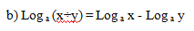
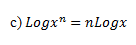
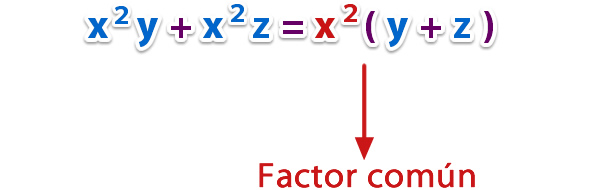

En matemáticas, una fracción es la expresión de una cantidad dividida entre otra cantidad; es decir que representa un cociente no efectuado de números. Por razones históricas también se les llama fracción común, fracción mixta o fracción decimal. Las fracciones comunes se componen de: numerador, denominador y línea divisora entre ambos (barra horizontal u oblicua). En una fracción común a/b el denominador "b" expresa la cantidad de partes iguales que representan la unidad, y el numerador "a" indica cuántas de ellas se toman.
El conjunto matemático que contiene a las fracciones de la forma a/b, donde a y b son números enteros y b≠0 es el conjunto de los números racionales, denotado como ℚ.
Toda fracción es una división y toda división es una fracción. Debido a eso una división se puede convertir en una fracción para ser simplificada.
Las fracciones pueden ser representadas como (a÷g) en una operación matemáticas.
De manera más general, se puede extender el concepto de fracción a un cociente cualquiera de expresiones matemáticas (no necesariamente números).
Fracciones propias e impropias
Los matemáticos usan tres categorías para describir fracciones: propias, impropias, y mixtas. Las fracciones que son mayores que 0 pero menores que 1 se llaman fracciones propias. En las fracciones propias, el numerador es menor que el denominador. Cuando una fracción tiene un numerador mayor o igual que el denominador, la fracción es una fracción impropia. Una fracción impropia siempre es 1 o mayor que 1. Y, finalmente, un número mixto es una combinación de un número entero con una fracción propia.
Identificando fracciones propias e impropias
En una fracción propia, el numerador es siempre menor que el denominador.
En una fracción impropia, el numerador siempre es mayor o igual que el denominador.
Fracciones mixtas
Son aquellas fracciones que constan de una parte entera y una parte fraccionaria. Por ejemplo: 5 4/3; a + x/y ; 1 4/6.
Operacion de fracciones
En esta página explicamos las operaciones entre fracciones (suma, resta, multiplicación y división) y resolvemos 10 problemas. Es necesario que sepáis calcular el mínimo común múltiplo y el máximo común divisor.
Suma y resta de fracciones con denominador común
Suma:
Cuando dos fracciones tienen el mismo denominador, su suma se calcula sumando los numeradores:
¡Los denominadores no se suman!
Resta:
La resta de dos fracciones con denominador común se calcula restando sus numeradores:
Suma y resta de fracciones con distinto denominador
Suma:
Si los denominadores son distintos, la suma no se calcula simplemente sumando sus denominadores. Por ejemplo, consideremos las fracciones 1/2 y 1/4
La fracción 1/2 es igual a la fracción 2 /4 (se observa perfectamente en la representación). Si usamos esta fracción en lugar de 1/2, tenemos denominador común y podemos sumar las fracciones fácilmente.
Luego, lo que tenemos que hacer es cambiar una o ambas fracciones por fracciones equivalentes de forma que ambas tengan el mismo denominador.
Método
Para hacer esto, escribiremos como nuevo denominador al mínimo común múltiplo de los dos denominadores:
Los numeradores se calculan dividiendo el nuevo denominador entre el antiguo y multiplicando el resultado por el antiguo numerador:
Resta:
Para calcular la resta, procedemos del mismo modo, pero restando los numeradores en el paso final.
Multiplicación de fracciones
La multiplicación de fracciones es muy fácil de calcular y no importa si tienen denominador común o no:
Es decir, se multiplican los numeradores y los denominadores.
Por ejemplo,
División de fracciones
La división de fracción se calcula multiplicando numerador y denominador en cruz:
Por ejemplo:
Es decir:
- El numerador es el producto del numerador de la primera fracción y del denominador de la segunda.
- El denominador es el producto del denominador de la primera fracción y del numerador de la segunda.
También, podemos escribir la división como
Regla que suele ayudar: el de arriba (n)por el de abajo (b) entre los dos del medio (m y a).
Las potencias son una operación matemática entre dos términos denominados: base a y exponente n, se lee normalmente como «a elevado a la n». Hay algunos números exponentes especiales como el 2, que se lee al cuadrado, y el 3, que se lee al cubo.
hay que recordar que una multiplicación también se puede considerar como la operación que simplifica la tarea de sumar varias veces un mismo número consigo mismo.
3 + 3 + 3 + 3 + 3 = 3 x 5 = 15 (sería como decir sumo 3 cinco veces)
La potencia es, de manera parecida, la manera de simplificar la multiplicación de un factor por sí mismo varias veces.
3 x 3 x 3 x 3 x 3 = 3^5 = 243 (sería como decir multiplico 3 cinco veces)
Los términos de una potencia son:
- Base: el número que se multiplica
- Exponente: el número de veces que se multiplica
Valor de una potencia
Se multiplica la base por sí misma el número de veces que dice el exponente. Observa que el factor que se multiplica es la base.
La radicación es la operación inversa de la potenciación. Supongamos que nos dan un número a y nos piden calcular otro, tal que, multiplicado por si mismo un número b de veces nos da el numero a.
Por ejemplo: calcular qué número multiplicado por si mismo 2 veces da 196. Ese número es 14.
El número que esta dentro de la raíz se llama radicando, el grado de la raíz se llama índice del radical, el resultado se llama raíz.
Podemos considerar la radicación como un caso particular de la potenciación. En efecto, la raíz cuadrada de un numero (por ejemplo a) es igual que a1/2, del mismo modo la raíz cúbica de a es a1/3 y en general, la raíz enésima de un numero a es a1/n.
La mejor forma de resolver los ejercicios de operaciones con raíces es convertir las raíces a potencias y operar teniendo en cuenta las propiedades dadas para la operación de potenciación.
Terminos
Los términos de la radicación son: el radicando, el indice radical y la raiz.El radicando es cualquier número dado del que deseamos hayar la raiz.El indice radical indica las veces que hay que multiplicar por si mismo un número para obtener el radicando.La raiz es el número que multiplicado por si mismo las veces que indica el indice radical da el radicando.
Representación
La forma de representar la radicación es la siguiente:
Dado un radicando A, un indice radical B y una raiz C, donde se cumple que CB = A se indicaria de la siguiente forma (b)raiz(a) = c El grafismo para indicar una raiz se llama signo radical
Operaciones con radicales
Operaciones con radicales, producto, cociente y suma de radicales, con raíces del mismo índice y de distinto índice
Soluciones segun sea el exponente y el signo del radicando
Radicacion mayor que 0:
Si a >= 0, (n) raiz(a) Existe siempre
Radicacion menor que 0:
Si a <= 0, (n)raiz(a)
Relacion entre radicales y potencias
El radicando pasa a ser la base de la potencia
PRODUCTO DE RADICALESs
Para multiplicar radicales se deben tener el mismo indice.Se deja el mismo indice y se multiplican los radicandos
Cuando no tiene el mism indice primero hay que reducir a indice comun
Se hace hallando el minumo comun multiplicando indices.
- minimo comun multiplo de 3 y 5 seria 15
- para pasar de indice 3 a 15 hemos multiplicado por 5, el radicando lo debemos elevar a 5
- para pasar de indice 5 a indice 15 hemos multiplicado por 3, el cadicando lo debemos elevar a 3.
- en este momento ya tenemos los radicales reducidos a indice comun, dejamos el mismo indice y multiplicamos los radicandos.
Logaritmación es el proceso de hallar el exponente al cual fue elevada la base para obtener un número. Veamos un sencillo ejemplo:
La pregunta que debemos hacernos es: ¿A que debemos elevar 2 (la base del logaritmo) para obtener 8? En este caso, la respuesta sería 2^3=8, es decir, que lo hemos elevado a 3.
Observamos una serie de elementos, como:
a) La base: Es el número que elevado al exponente nos da el número total.
b) El número total: Es el resultado, en el ejemplo de arriba, sería el 3
c) El logaritmo: Es el exponente por el cual debemos elevar la base para obtener el total.
Identidades básicas:
Es decir, que el logaritmo de un producto es igual a la suma de logaritmos de ambas partes del producto.
.

La división de logaritmos es igual a la diferencia de logaritmos entre el numerador y el denominador.

El logaritmo de una potencia es igual al producto entre el exponente y el logaritmo de la base de la potencia.
El logaritmo de una raíz es igual al producto entre la inversa del índice del logaritmo y el radicando.
Veamos ahora la representación gráfica, comparándola con la función exponencial:
Nos damos cuenta que para la función logarítmica no existen números negativos, además de que es una función creciente (al menos cuando su base es mayor que uno).
Los productos notables o identidades notables nos permiten realizar operaciones con expresiones algebraicas de una manera mas sencilla; debido a que podemos transformar un polinomio grande en dos polinomios mas pequeños sin alterar la expresión o polinomio original, usando cualquiera de los tipos de producto notable. En el siguiente post estudiaremos las definiciones de producto notable y conoceremos algunos de sus tipos.
Qué es un producto notable
Los productos notables o también conocidos como identidades notables, son un producto o expresiones algebraicas, que cumplen con ciertas reglas, que se conocen como reglas fijas, y donde el resultado obtenido lo podemos escribir con solo hacer una inspección, sin necesidad de verificar la multiplicación o recurrir a varios pasos.
Los productos notables, se puede decir que son el resultado de hacer una factorización, formada de polinomios que poseen varios términos.
En los polinomios, son de gran ayuda ya que con el uso de sus reglas y formulas, permiten que el proceso sea mucho mas corto y que podamos expresar un polinomio directamente sin necesidad de ir probando cada termino.
Para que se usan los productos notables
Los productos notables los podemos usar para realizar operaciones algebraicas de una manera mas rápida, sin necesidad de hacer una comprobación de la multiplicación realizada.
En otros casos son utilizados porque ayudan al encontrar: medidas, o en el calculo de área, superficies, e intensidades en el área de la ingeniaría.
Son usados para reducir procedimientos matemáticos; ya que con sus reglas se pueden obviar varios pasos en la resolución de problemas matemáticos.
En los polinomios son usados para reducirlos, usando las diferentes reglas de productos notables.
Tipos de productos notables
Existe varios tipos de productos notables o identidades notables, cada uno con su característica particular, sus diferente forma de resolver y con distintas reglas que cumplir, entre estos podemos mencionar los siguientes:
1.Binomio al cuadrado.
2.Binomio al cubo.
3.Binomios conjugados.
4.Binomios con un termino común.
5.Trinomio al cuadrado
6.Trinomio al cubo
Formulas de productos notables
Existen diversas formulas todo dependerá del tipo de factorización que se desee realizar, entre las mas importantes podemos mencionar:
Formulas de binomio al cuadrado:
En este producto notable podemos encontrarnos con dos formulas:
Formulas de binomio al cubo:
En este producto notable podemos encontrarnos con dos formulas:
Las Formulas de binomios conjugados:
Formulas de binomios con un termino común:
La Formula de un trinomio al cuadrado:
Con las dadas se pueden formar otras cambiándole los signos a los términos; pero el procedimiento es el mismo.
Formula de trinomio al cubo:
Al igual que la anterior, podemos formar varias formulas, con solo cambiar los signos de los términos, pero el procedimiento es el mismo; los negativos colocarlos entre paréntesis y no olvidar multiplicar los signos al momento de resolver.
Factorizar una expresión algebraica (o suma de términos algebraicos), es el procedimiento que permite escribir como multiplicación dicha expresión.
Los factores o divisores de una expresión algebraica, son los términos, ya sean números y/o letras, que multiplicados entre sí dan como producto la primera expresión.
Así, por ejemplo, si multiplicamos a por a + b podemos ver qué;
Dan como producto a2 + ab, entonces, los factores o divisores de esta expresión algebraica son a y a + b.
s
La factorización es el proceso en el cual un polinomio se convierte en la multiplicación de sus factores primos. Los tipos de factorización que existen son:
1.Diferencia de cuadrados
2.Suma de cubos.
3.Diferencia de cubos.
4.Suma de potencias impares iguales.
5.Diferencia de potencias impares iguales.
6.Trinomio cuadrado perfecto.
7.Trinomio de la forma x²+bx+c
8.Trinomio de la forma ax²+bx+c.
9.Factor común.
10.Triángulo de Pascal como guía para factorizar.
Métodos utilizados para factorizar un polinomio.
Primero debes saber que, no todos los polinomios se pueden factorizar, ya que, al igual que en los números primos que sólo son divisibles por ellos mismos y por 1, hay expresiones algebraicas que también solo son divisibles por ellas mismas y por 1.
Por ejemplo, el polinomio ax + by + cz, no se puede factorizar ya que, solo es divisible por ax + by + cz y por 1. Es decir, este polinomio no tiene un factor en común.
Para poder factorizar una expresión algebraica es necesario que siempre exista al menos un factor en común dentro de sus términos, ya sean números y/o letras.
Factor común de una expresión algebraica es el máximo común divisor (m.c.d.) de los términos que la componen.
Factor común monomio.
Debes identificar el factor común entre todos los términos de la expresión, y escribirlo como coeficiente de un paréntesis, en el cual tienes que escribir los términos resultantes después de dividir por el factor común.
Ejemplos:
a) Factorizar x2y + x2z
Identificamos el factor común de x2y y x2z el cual es x2, entonces dividimos los términos de la expresión por x2; x2y : x2 = y y x2 z : x2 = z. Ahora escribimos la factorización;

b) Factorizar 8 m2 - 12 mn.
Identificamos el factor común de 8 m2 y 12 mn el cual es 4m, entonces dividimos los términos de la expresión por 4m; 8 m2 : 4m = 2m y 12 mn : 4m = 3n. Ahora escribimos la factorización;